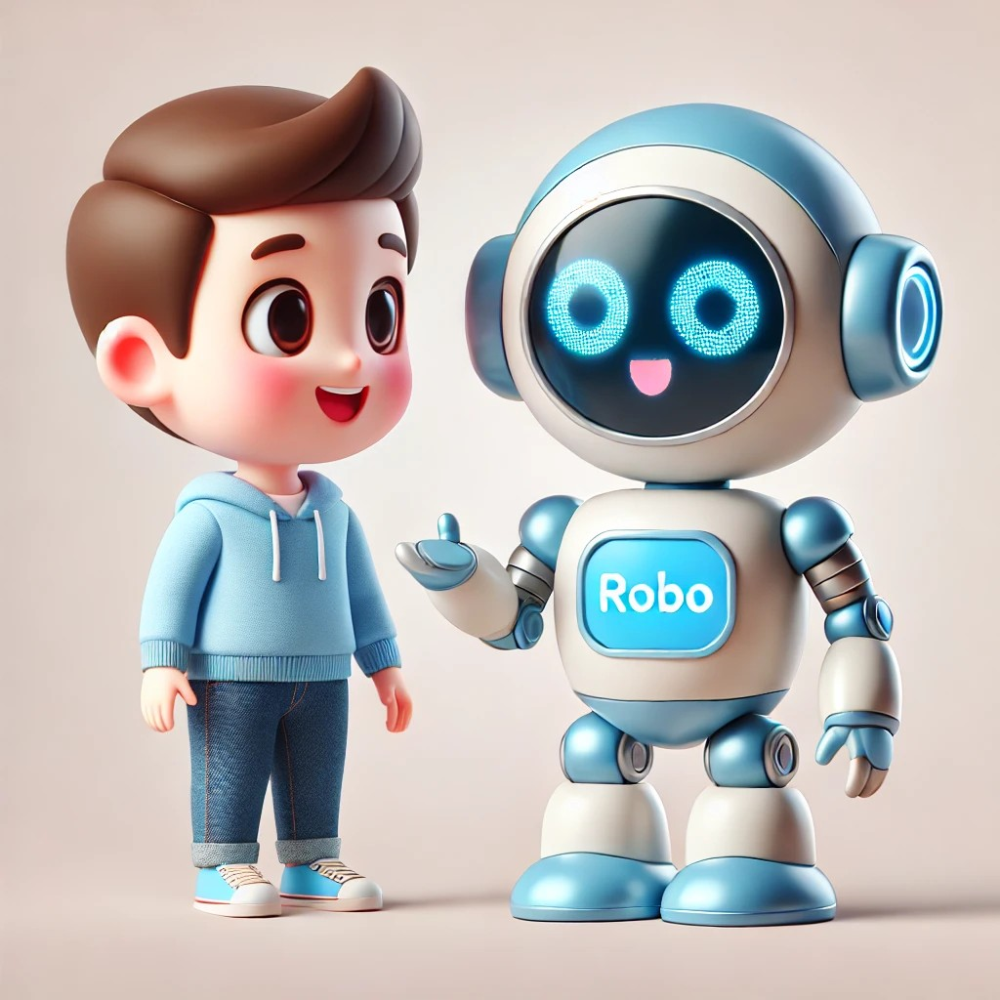

CONCEPTOS TEÓRICOS
2.1. Dilemas Digitales: Explorando la Ética en la Era de la IA
¡Hola humano!
¡Imagina tener un amigo que siempre te entiende y sabe exactamente qué decirte! Ese amigo se llama Robo, y tiene un superpoder increíble: el procesamiento del lenguaje natural.
Este superpoder le permite a las computadoras entender y hablar en nuestro idioma, como si fueran uno más de nuestros amigos. Sin embargo, es muy importante usar esta tecnología, como ChatGPT, de manera responsable y ética.
|  |
2.2. Arte y Responsabilidad. Navegando la Creación de Imágenes con IA
¡Hola, jóvenes creadores!
Robo también puede usar IA generativa para crear imágenes asombrosas basadas en tus ideas. Sin embargo, es muy importante que Robo use esta tecnología de manera responsable y ética.
Esto significa que, al crear imágenes, debe asegurarse de respetar a los demás, no copiar sin permiso, y siempre pensar en el impacto que sus creaciones pueden tener. ¿Qué tipo de imágenes le pedirías a Robo que creara, siempre recordando ser responsable y ético en tus peticiones?
Hoy, te invito a embarcarte en un viaje creativo y ético con herramientas increíbles como DALL-E y Microsoft Copilot. Estas herramientas de IA pueden tomar tus descripciones escritas y convertirlas en imágenes visuales únicas. ¡Sí, leíste bien! Puedes escribir cualquier cosa, desde un "gato astronauta en Marte" hasta un "dragón amigable jugando ajedrez", y ver cómo la IA lo convierte en una imagen sorprendente.
Lee el documento E202 y sabrás lo que Robo te propone.